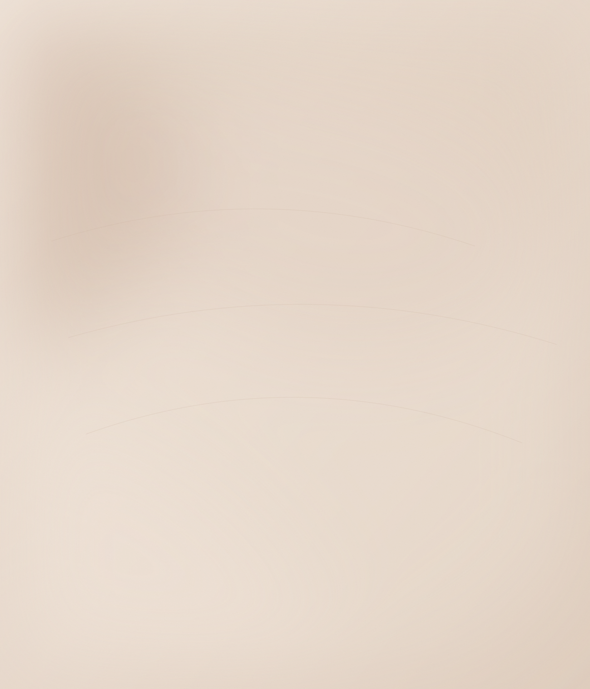
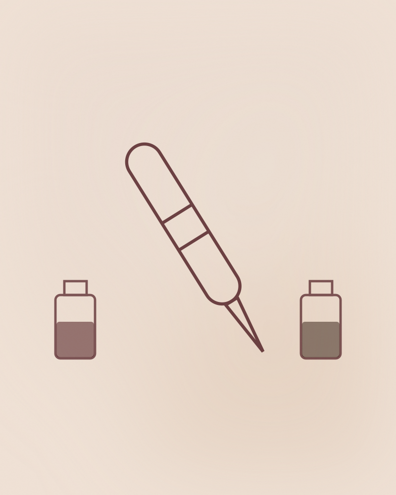

primero se
dibuja, luego
se pigmenta.
La diferencia entre una ceja que parece tuya y una que parece puesta está casi siempre en lo que ocurre antes de encender el dermógrafo.
valoración
Miramos tu piel al detalle: grosor, poro, tendencia grasa, cicatrices, vello existente y trabajos anteriores. También hablamos de lo que no quieres, que suele ser más revelador que lo que quieres.
- 20 minutos, gratuita y sin compromiso
- Revisión de historial médico y contraindicaciones
- Recomendación de técnica y presupuesto cerrado


diseño y mapeo
Medimos con hilo y compás sobre tu rostro en reposo y en movimiento. Ninguna cara es simétrica, así que no buscamos dos cejas idénticas: buscamos dos cejas hermanas que equilibren tus rasgos.
- Trazado con lápiz antes de cualquier aguja
- Ajustes ilimitados hasta tu aprobación
- Foto del diseño para que lo veas de frente y en foto
pigmento y color
El pigmento no se elige por el color del pelo, sino por el subtono de la piel: es lo que decide si dentro de un año la ceja vira a rojizo, a gris o se mantiene. Trabajamos con pigmentos veganos de base híbrida y mezcla personalizada por clienta.
- Prueba de color en la zona de la sien
- Registro del lote y la fórmula en tu ficha
- Anestesia tópica antes y durante la sesión

los 10 días después
fase 04 · cicatrizaciónDías 1–3
El color se ve intenso y el trazo marcado. Limpia con suero fisiológico y aplica una capa muy fina de la crema que te damos, mañana y noche.
Días 4–8
Aparece la costra fina. No la toques, no la arranques y no la mojes en exceso: cada costra que se cae antes de tiempo se lleva pigmento con ella.
Días 9–30
El tono baja alrededor de un 30 % y puede parecer que ha desaparecido. Es normal: el color reaparece a partir de la tercera semana. El retoque lo fija todo.
Evita durante 10 días
- Sauna, piscina, mar y vapor
- Deporte intenso y sudoración fuerte
- Exposición solar directa sin protección
- Maquillaje sobre la zona y exfoliantes
- Dormir boca abajo la primera semana
Para que dure más
- SPF 50 a diario sobre la zona pigmentada
- Evita ácidos y retinol en la zona
- Retoque de mantenimiento cada 12-18 meses
- Avísanos antes de un láser facial
tu piel decide la técnica
Piel seca o normal
Retiene bien el trazo fino. Es la candidata ideal para microblading pelo a pelo, con líneas que se mantienen nítidas más tiempo.
Piel mixta
Suele funcionar mejor la técnica combinada: pelo a pelo en la cabeza de la ceja y sombreado suave en el cuerpo y la cola.
Piel grasa o con poro
El trazo fino tiende a difuminarse. Aquí recomendamos powder brows, que aguanta mejor y cicatriza de forma más uniforme.

hablemos de
tus cejas.
La valoración es gratuita y no obliga a nada. Si no es tu momento, te lo diremos.
pedir cita